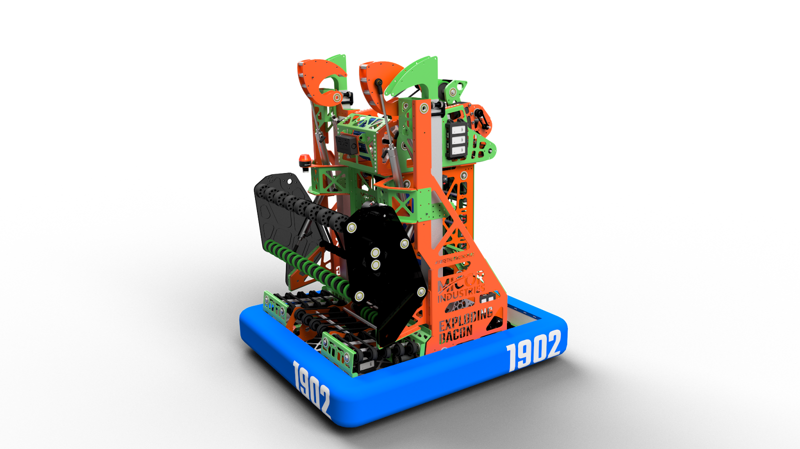
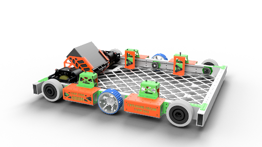
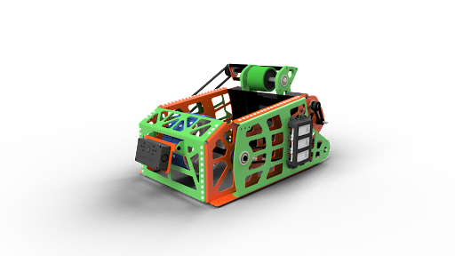
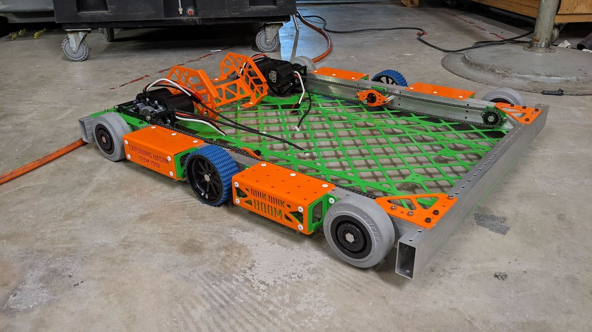
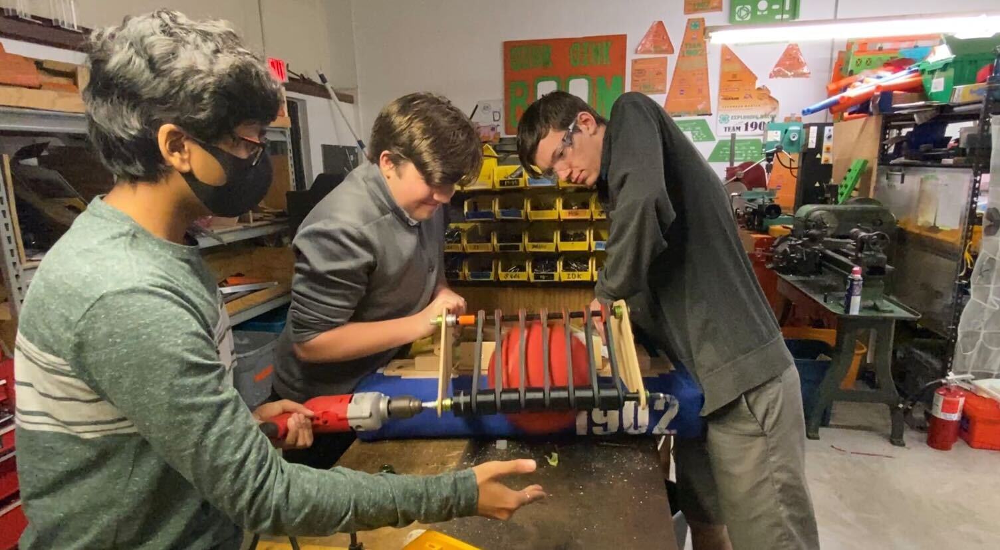
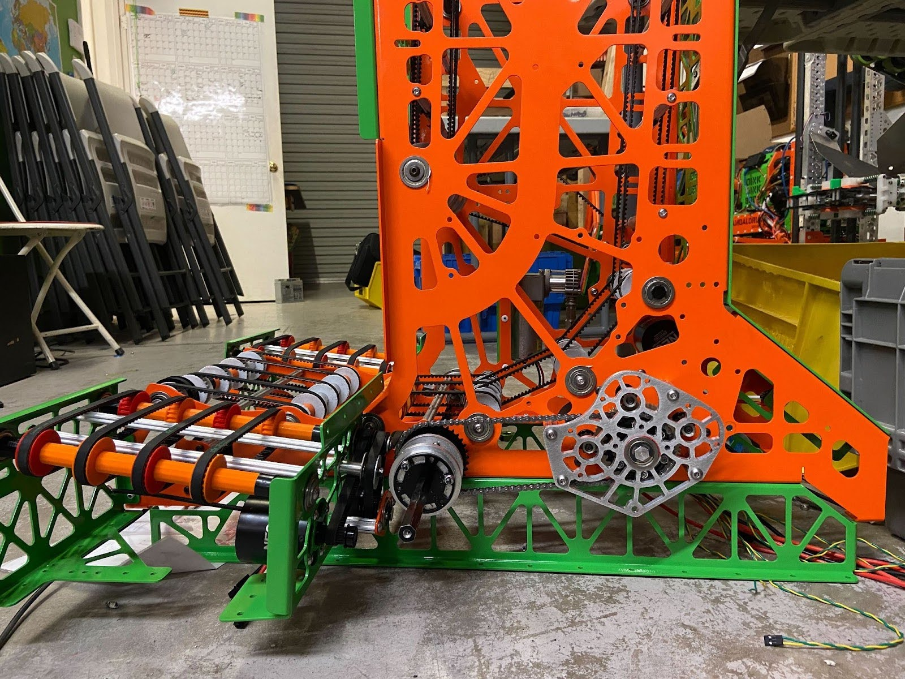
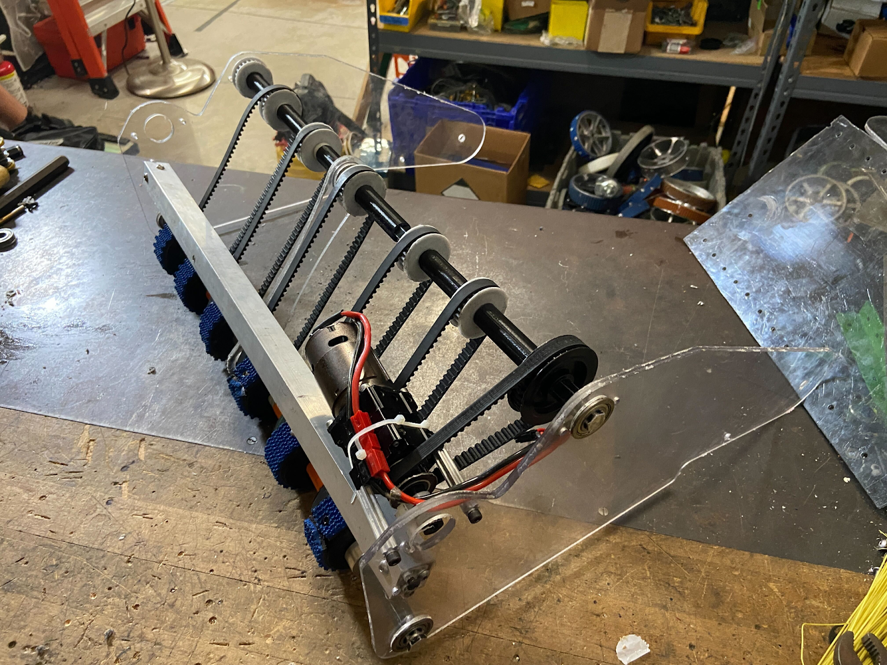
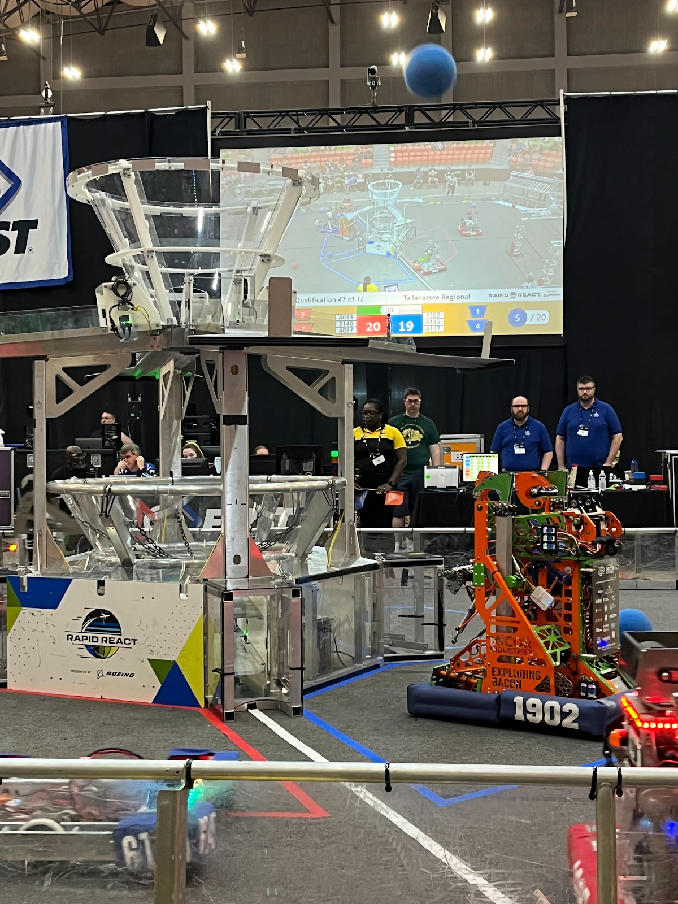
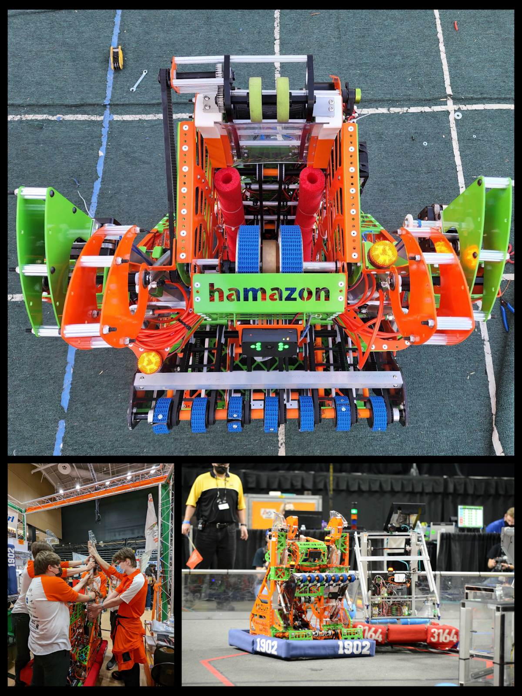

FRC - Hamazon
Team 1902 Exploding Bacon's 2021 Robot
Project Overview
FRC (FIRST Robotics Competition) has been a huge part of my high school STEM experience. Given nothing more than a few weeks after a game reveal, teams are pushed to design, build, and compete with a robot to do a set of tasks. As the Mechanical Lead + Co-President on Team 1902 Exploding Bacon, I led design, machining, and assembly of the robot. Through technical and soft skills, I pushed for many "firsts" for our team, such as a "Tech Binder", to keep our robot's technical documentation. Leading the mechanical team through many iterations of CAD and building helped me grow so much as an engineer, learning how to design for assembly and create interesting designs. HAMAZON was a great experience to build and won the engineering design award, and reached finals at the Tallahassee Regional!
Image Gallery

Design Overview
Built with match strategy in mind, Hamazon’s design allows it to play all aspects of this year’s game. Equipped with an over-the-bumper intake capable of withstanding the rigors of competition, Hamazon is able to obtain cargo from the carpet, the terminal and midair. Game pieces are then stored in Hamazon’s vertical indexer, through the use of timing belts and compliant wheels. With an adjustable hood on the dual NEO-powered shooter, Hamazon is able to adapt to many scoring distances around the field. Using vision tracking through the limelight, the robot can even autonomously adjust its position to face the center of the goal. Hamazon’s dual telescoping climbers paired with piston actuated hooks allow it to ascend the hangar at the end of the match.
Due to the limited time frame given to teams for the competitions, having a fleshed-out design done as quickly as possible is extremely important. After leading multiple meetings discussing our goals/priorities for the bot, we had a generic list of what our end goal should look like. I developed my CAD skills the previous year by working on designing the 2021 robot, allowing me to spearhead the design for this year. Starting with initial 2D side concept sketches, I then started CAD from the ground up. For 2022, our CAD team was severely limited compared to previous years, so splitting up work was vital. I led both the shooter subsystem, and the drivetrain subsystem. Setting a deadline of 2 weeks, we managed to have a full assembly of our robot (including fasteners).

Mechanisms
Drivetrain: This year’s drivetrain design is a 6-wheel “West Coast Drive,” equipped with Andymark Performance wheels in the center and Colson wheels on the side. With a WCP SS Gearbox, Hamazon is able to dash around the field very quickly and efficiently. Because of our team’s discussion during our Match Strategy meeting, we aimed to build a drivetrain that would be able to play defense, (due to the defensive nature of this game), and be robust enough to survive a fall during the climb, both of which led us to this design.
Shooter: The Shooter is equipped with dual 4’’ launch wheels capable of running at 5,000 RPM to consistently score in the UPPER HUB. The Limelight is positioned at the front of the shooter to allow for precise shooting and positioning of the robot relative to the retroreflective tape The shooter is my favorite mechanism, since I was able to take it start to finish with many cool and new ideas for the team. The shooter had 2 massive 4 inch wheels in the front, with geometry that optimized the compression on the game pieces for shooting them out. There are also smaller "backspin wheels", imperative to reduce the magnus effect that the balls would face when being shot. By adjusting the belt + gear ratio to allow the backspin wheels to have the same tip-speed as main wheels, I was able to eliminate the back-spin effect causing balls to be unpredictable. Modeling the shooter in Desmos also allowed me to find optimal speeds given our geometry and the MOI we needed for our flywheel to give the consecutive balls the same power level when shot.




Manufacturing + Assembly
After the CAD was completed, manufacturing of many different parts began. All the sheet metal on our robot is completed by Magnus Hi-Tech, a sponsor company that is able to plasma-cut, bend, and even powder coat our metal (Magnus spreadsheet). Everything else on the robot is machined in-house through the use of the machines at our build space (lathes, mills, CNC routers & hand tools). Specifically, I utilized the CNC Router the most, for the complex geometries we needed to produce, especially for early prototypes. After completing all required in-house machining with an organizational spreadsheet, assembly was able to begin with the sheet metal parts. Using CAD as a reference, assembly of the robot ran very smoothly. Originally starting with the drivetrain and working our way up, Hamazon's assembly was able to be completed efficiently, leaving enough time for programmers and drive practice.


Conclusion/Next Steps
Overall, this was one of my favorite engineering projects so far, being able to combine skills to create a very tangible and very successful robot. As this was my senior year, I would not be able to compete in these competitions from the future, as FRC is only aimed for high-schoolers. That being said, I have ensured that the team will still go strong even after the current class graduates, by teaching and preparing the newer class in many technical and soft skills. This, along with starting a proper documentation system (Part Spreadsheets, Tech Binders) ensured that not only was I able to have a successful senior year building the robot, but that the team would have a good framework to continue in the following years!
Screenshots / Media

